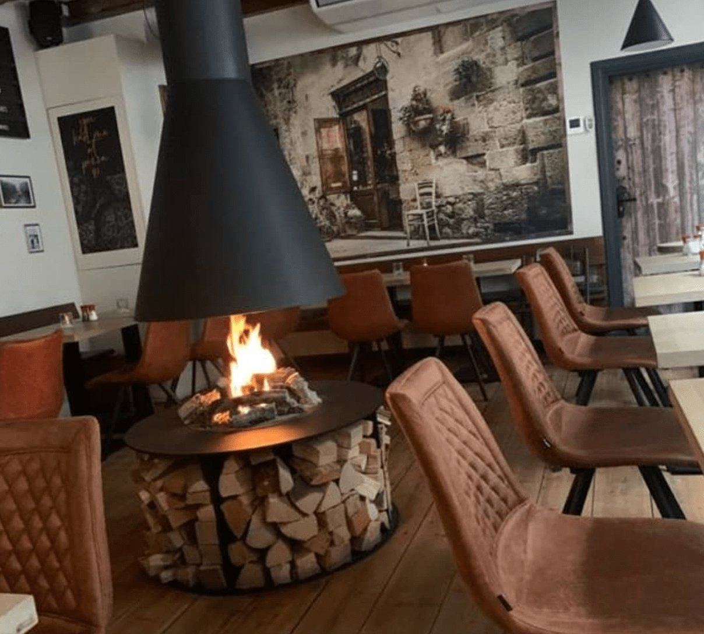

Gravenstraat 20, achter de Nieuwe Kerk
Een echte Italiaanse maaltijd, op een steenworp van de Dam.
Eén van de weinige echt authentieke Italiaanse restaurants in het centrum van Amsterdam. Onze Italiaanse koks koken klassieke, traditionele gerechten en fine-dining specialiteiten, met uitsluitend verse pasta.
Elke dag open, 12:00 tot 22:00


Kwaliteit boven alles
De combinatie van een historische plek, charmante bediening en een creatieve draai aan de Italiaanse thuiskeuken zorgt ervoor dat zowel Amsterdammers als bezoekers steeds terugkomen.
Goed eten begint bij goede ingrediënten. Vanuit een authentieke Italiaanse aanpak zoeken wij de allerbeste ingrediënten van over de hele wereld. Schuif aan in ons gezellige restaurant of, als het weer meezit, buiten op ons terras, voor een lunch of een romantisch diner.
Besloten feesten en diners
Of u nu een verjaardag viert of een zakendiner plant, ons team helpt u graag. Wij hebben speciale menu's voor besloten gezelschappen. La Cantina is de plek om iets te vieren en mooie herinneringen te maken.
Bel ons voor meer informatie over de mogelijkheden.
Bel 020 786 7211
In één van de oudste stukjes Amsterdam
Op een steenworp van de Dam, direct achter de Nieuwe Kerk uit het begin van de vijftiende eeuw, ligt één van de oudste stukjes van onze mooie stad. Een schilderachtig doolhof van straatjes en steegjes, en een fijne ontsnapping aan de drukte van het winkelgebied. De restaurants en bruine cafés hier zijn bekend en geliefd bij Amsterdammers.
De Gravenstraat dankt haar naam aan de graven van Henegouwen, die hier rond 1300 in de plaatselijke herberg verbleven.
Reserveer een tafel
Bel ons of stuur een mail met de datum, het tijdstip en het aantal personen. Wij zijn elke dag open van 12:00 tot 22:00.
Hier vindt u ons
Ristorante La CantinaGravenstraat 20
1012 NM Amsterdam
+31 (0)20 786 7211
info@lacantinaamsterdam.nl
Openingstijden
Elke dag van 12:00 tot 22:00
Onze nieuwsbrief ontvangen? Stuur ons een mail.
Plan uw route